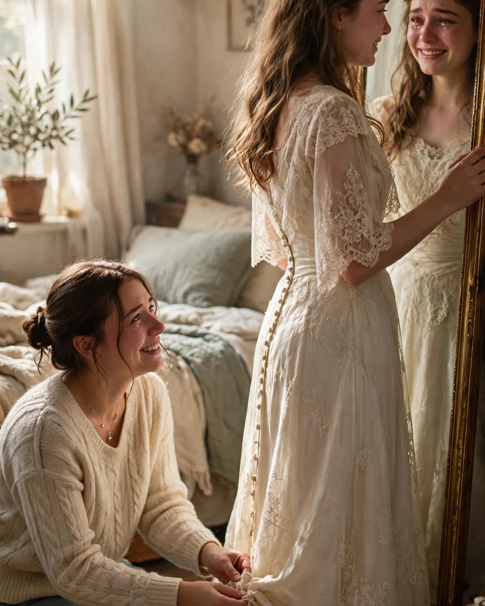

The Borrowed Dress
A Clipp Kaili original story

My sister got married in my wedding dress, and I have never told anyone what she found sewn inside it. Until now.
When I married Tom, money was tight enough to squeak. I bought the dress secondhand from a woman in our church, Sister Alma, who pressed it into my arms and said, "Every bride leaves a little luck in it, honey. You just add yours." I thought it was a saying. It was not a saying.
The night before my wedding, hemming it at my kitchen table, I found a tiny pocket sewn into the lining — no bigger than a teabag — and inside it, a folded note in faded ink:
I was terrified. I wore this dress and loved a good man for 41 years. Your turn. — E.
I cried at that table. Then I wore the dress, and danced, and loved my good man — and the week after the wedding, I sat down and wrote my own note, in my own hand, and sewed it into a second tiny pocket beside hers. He snores. He also warms your feet without being asked. Keep him. — J.
Twelve years later, my little sister stood in my guest room holding that dress against herself in the mirror. Her fiancé's hours had been cut; her wedding budget had evaporated; and she had that brave, wobbly smile people wear when they're trying not to ask for help.
"Wear mine," I said.
"Jess, I can't—"
"You can. It carries well. Trust me."
She found the pocket the night before her wedding, of course — sitting up at midnight doing a final fitting, same as me. She called me at 12:40 a.m., whispering because her bridesmaids were asleep in the next room. "There are NOTES in this dress."
"Read both," I said.
"I did," she said, and she was crying, and laughing. "Who's E.?"
"Every bride before you, sweetheart. You're not walking down that aisle alone. None of us did."
Here's the part of this story I keep like a jewel: the dress needed one repair for Mia's wedding. A seam had split near the hem — old fabric, honest wear. The seamstress who fixed it was an older woman who turned the dress inside out, saw the two little pockets, and went very quiet. Then she showed us her stitching on the inside of the hem, from a repair she'd done decades ago, on this same dress, for a bride named Alma's daughter.
There are three pockets in the lining now. Mia sewed hers the week after her wedding, in handwriting I would know anywhere:
Scared again. Did it anyway. Best day of my life. — M.
Someday, if one of our daughters wants it, there will be four.
A dress is just cloth, people say. People are wrong. Some cloth is a chain of women, holding hands across the years, each one whispering to the next:
I was terrified too. Walk anyway.
This story is a work of fiction, written to touch hearts and bring families closer.
← Back to all stories